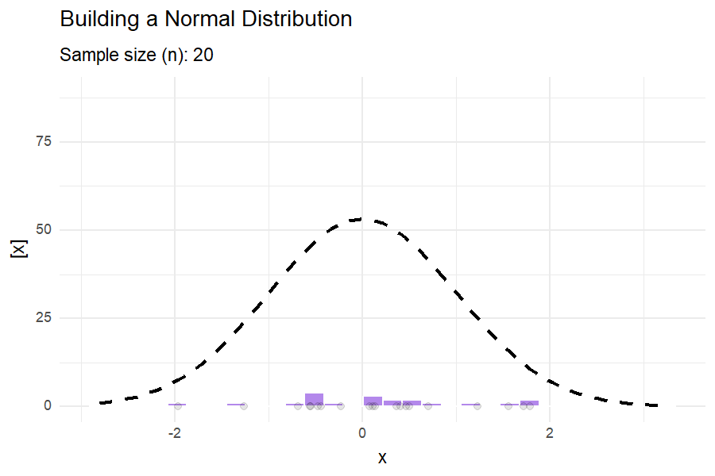
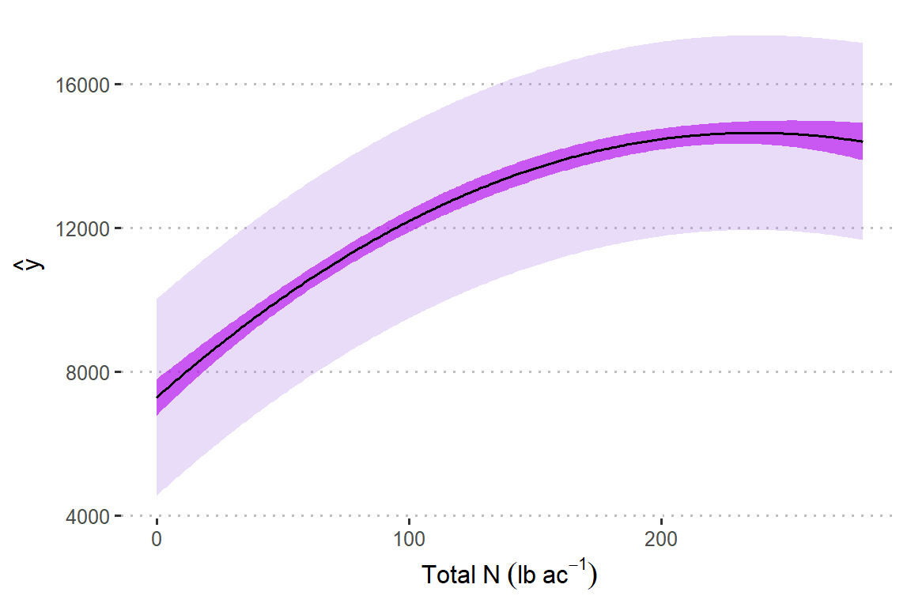

STAT 799 - Topics in Statistics: Applied linear mixed models in agriculture and life sciences
Spring 2026
Day 1 Welcome to STAT 799!
January 26th, 2026
1.1 About this course:
- About me
- About you:

- In rounds: What’s your major, what do you expect to learn?
1.1.1 Logistics
- Website
- Syllabus
- Statistical programming requirements
- Rough mindmap of the course (on whiteboard)
- Semester project
- Grades: Pass (100-69.99), Fail (<69.99).
- Attendance policies
- Semester projects
1.2 Learning goals
By the end of this course, you should be able to:
- Identify the data structure for a given dataset and write the statistical model that corresponds to said data structure using statistical notation.
- Distinguish the benefits and disadvantages of different modeling approaches.
- Write the Materials and Methods section in a paper (or graduate thesis) that describes the data generating process and the statistical model.
1.3 On notation
- scalars: \(y\), \(\sigma\), \(\beta_0\)
- vectors: \(\mathbf{y} \equiv [y_1, y_2, ..., y_n]'\), \(\boldsymbol{\beta} \equiv [\beta_1, \beta_2, ..., \beta_p]'\), \(\boldsymbol{u}\)
- matrices: \(\mathbf{X}\), \(\Sigma\)
- probability distribution: \(y \sim N(0, \sigma^2)\), \(\mathbf{y} \sim N(\boldsymbol{0}, \sigma^2\mathbf{I})\).
1.4 Semester project
- Manuscript
- See rubric on CANVAS.
- Publication-ready M&M and results.
- Must include Abstract (250w), Introduction (~400-600w), M&M (~300-700w), Results (~400w), Discussion (~300-500w), Conclusions (~100w).
- Last paragraph in the Introduction should clearly state the research gap and the research objectives.
- Reproducible Tutorial
- Publication-ready tutorial/R documentation.
- If you are not sure about your research question yet, talk to me after class today.
1.5 Roadmap of this course
| Date | Topic | Kahoot? |
|---|---|---|
| 01/28 | Statistical modeling. Continuous and categorical predictors. Review of mean, variance, and covariance. Types of uncertainty and sources of uncertainty. | |
| 01/29 | Linear mixed models I. Model diagnostics and model selection. | |
| 01/30 | Linear mixed models II. Model diagnostics and model selection. | Yes |
| Weekend | NA | NA |
| 02/02 | Analysis of variance. | |
| 02/03 | Non-linear mixed models. | |
| 02/04 | Troubleshooting in mixed models fitting using R software. Computational and analytical solutions. | Yes |
| 02/05 | Generalized linear mixed models I. Beta, Binomial. | |
| 02/06 | Statistical inference. Statistical power in designed experiments | |
| Weekend | NA | NA |
| 02/09 | Students are encouraged to attend Workshop ‘Non-linear models for the plant sciences’ | |
| 02/10 | Students are encouraged to attend Workshop ‘Non-linear models for the plant sciences’ | |
| 02/11 | Students are encouraged to attend Workshop ‘Non-linear models for the plant sciences’ | |
| 02/12 | Scientific writing. Dos & don’ts. | |
| 02/13 | Wrap-up | Yes |
1.6 Getting started with statistical modeling
Why do we need statistical models?
Statistics as a summary of the data
Excerpt from the short story “Funes the memorious” (J.L. Borges): I suspect, however, that he was not very capable of thought. To think is to forget differences, generalize, make abstractions. In the teeming world of Funes, there were only details, almost immediate in their presence.
What is a statistical model?
Deterministic component + Stochastic component
1.6.1 Writing a statistical model
Deterministic component + Stochastic component
Example:
\(y_i \sim N(\mu_i, \sigma^2), \\ \mu_i = \beta_0 + \beta_1 x_i\)
1.6.2 What are linear models?
- Assume that \(y_i \sim N(\mu_i, \sigma^2)\).
…and there are 4 possible descriptions of the mean:
- \(\mu_i = \beta_0 + \beta_1 x_{1i} + \beta_2 x_{2i}\)
- \(\mu_i = \beta_0 + \beta_1 x_i + \beta_2 x_i^2\)
- \(\mu_i = \beta_0 \cdot \exp(x_i \cdot \beta_1)\)
- \(\mu_i = \beta_0 + x_i^{\beta_1}\)
What is a linear model and what is not?
1.6.3 Vectorized notation
Model equation form:
- \(y_i = \beta_0 + \beta_1 x_i + \varepsilon_i\)
- \(\varepsilon_i \sim N(0, \sigma^2),\)
Probability distribution form:
Scalar
- \(y_i \sim N(\mu_i, \sigma^2),\)
- \(\mu_i = \beta_0 + \beta_1 x_i\)
Vector
- \(\mathbf{y} \sim N(\boldsymbol{\mu}, \Sigma),\)
- \(\boldsymbol{\mu} = \boldsymbol{1} \beta_0 + \mathbf{x} \beta_1 = \mathbf{X}\boldsymbol{\beta}\)
1.6.4 Vectorized notation - cont.
\[\begin{bmatrix}y_1 \\ y_2 \\ \vdots \\ y_n \end{bmatrix} \sim N \left( \begin{bmatrix}\mu_1 \\ \mu_2 \\ \vdots \\ \mu_n \end{bmatrix}, \begin{bmatrix} Cov(y_1, y_1) & Cov(y_1, y_2) & \dots & Cov(y_1, y_n) \\ Cov(y_2, y_1) & Cov(y_2, y_2) & \dots & Cov(y_2, y_n)\\ \vdots & \vdots & \ddots & \vdots \\ Cov(y_n, y_1) & Cov(y_n, y_2) & \dots & Cov(y_n, y_n) \end{bmatrix} \right)\]
1.7 Review

1.7.2 Mean, Variance
- Mean: the balancing point of a probability distribution
- Variance: dispersion of \(y\)

What do these distributions mean in practice?

1.7.3 Covariance
Covariance between two random variables means how the two random variables behave relative to each other. Essentially, it quantifies the relationship between their joint variability. The variance of a random variable is the covariance of a random variable with itself. Consider two variables \(y1\) and \(y2\) each with a variance of 1 and a covariance of 0.6.
\[\begin{bmatrix}y_1 \\ y_2 \end{bmatrix} \sim MVN \left( \begin{bmatrix} 10 \\ 8 \end{bmatrix} , \begin{bmatrix}1 & 0.6 \\ 0.6 & 1 \end{bmatrix} \right),\]
where the means of \(y_1\) and \(y_2\) are 10 and 8, respectively, and their covariance structure is represented in the variance-covariance matrix. Remember:
\[\begin{bmatrix}y_1 \\ y_2 \end{bmatrix} \sim MVN \left( \begin{bmatrix} E(y_1) \\ E(y_2) \end{bmatrix} , \begin{bmatrix} Var(y_1) & Cov(y_1, y_2) \\ Cov(y_2,y_2) & Var(y_2) \end{bmatrix} \right).\]

1.8 The most common statistical model
\[\mathbf{y} \sim N(\boldsymbol\mu, \boldsymbol\Sigma),\]
where:
- \(\mathbf{y} \equiv [y_1, y_2, \dots, y_n]'\) contains the response data,
- \(\boldsymbol{\mu} \equiv [\mu_1, \mu_2, \dots, \mu_n]'\) contains the expected values of said data,
- \(\boldsymbol\Sigma\) is the variance-covariance matrix.
The most typical model typically has:
- \(\boldsymbol\mu = \mathbf{X}\boldsymbol{\beta}\) and
- \(\boldsymbol\Sigma = \sigma^2\mathbf{I}\).
In summary, the assumptions are:
- Normality
- Independence
- Constant variance
1.8.1 Properties of the general linear model
- \(E(\hat{\boldsymbol{\beta}}) = \boldsymbol{\beta}\)
- \(\text{Var}(\hat{\boldsymbol{\beta}}) = \frac{\sigma^2}{\mathbf{X}^T\mathbf{X}} = \sigma^2 (\mathbf{X}^T\mathbf{X})^{-1}\)
Class discussion:
- What if the observations weren’t independent?
- What if the variance wasn’t constant?
1.9 Uncertainty
Uncertainty will be one of the central topics in this course. Uncertainty is important because, as we summarize the information (e.g., to aviod Funes’ useless excess of information), we can better describe all the information with a combination of the mean and the variance.
1.9.2 Types of uncertainty in the general linear model
Recall \(\mathbf{y} \sim N(\boldsymbol{\mu}, \boldsymbol{\Sigma})\), where \(\boldsymbol{\mu} = \mathbf{X}\boldsymbol{\beta}\), and suppose \(\boldsymbol{\Sigma} = \sigma^2 \mathbf{I}\).
We use the estimator of \(\boldsymbol{\beta}\), \(\hat{\boldsymbol{\beta}}\).
\(Var(\mathbf{y}) = \sigma^2 = \frac{SSE}{df_e}\),
\(Var(\hat{\boldsymbol{\beta}}) = \frac{\sigma^2}{\mathbf{X}^T\mathbf{X}}\), and \(Var(\hat\beta_1) = \frac{\sigma^2}{(n-1)s^2_{x_1}}\).
Discuss the connection between \(n\), \({df_e}\), \(\sigma^2\) and \(Var(\hat{\boldsymbol{\beta}})\).
1.9.3 Uncertainty - applied example
Assume that the model \(y_i \sim N(\mu_i, \sigma^2), \mu_i = \beta_0 + \beta_1 x_i+ \beta_2 x_i^2\) describes the data generating process.
url <- "https://raw.githubusercontent.com/k-state-id3a/mixed-models-fall25/refs/heads/newpart3/data/nitrogen_yield.csv"
df_n_ss <- read.csv(url)
m1 <- lm(Yield_SY ~ Total_N + I(Total_N^2), data = df_n_ss)
DHARMa::simulateResiduals(m1, plot = T)
## Object of Class DHARMa with simulated residuals based on 250 simulations with refit = FALSE . See ?DHARMa::simulateResiduals for help.
##
## Scaled residual values: 0.1 0.3 0.004 0.588 0.792 0.556 0.168 0.344 0.256 0.452 0.388 0.388 0.832 0.94 0.692 0.936 0.132 0.312 0.424 0.664 ...m1 <- lm(Yield_SY ~ Total_N + I(Total_N^2), data = df_n_ss)
df_plot <- data.frame(Total_N = 0:280)
df_plot$yhat <- predict(m1, newdata = df_plot)
# estimation uncertainty
confid_est <- predict(m1, newdata = df_plot, se.fit = TRUE, interval = "confidence")
df_plot$est_low <- (confid_est$fit)[,2]
df_plot$est_up <- (confid_est$fit)[,3]
# estimation uncertainty
confid_pred <- predict(m1, newdata = df_plot, se.fit = TRUE, interval = "predict")
df_plot$pred_low <- (confid_pred$fit)[,2]
df_plot$pred_up <- (confid_pred$fit)[,3]df_plot |>
ggplot(aes(Total_N, yhat))+
geom_ribbon(aes(ymin = pred_low, ymax = pred_up),
alpha = .3, fill = "#B388EB")+
geom_ribbon(aes(ymin = est_low, ymax = est_up),
alpha = .6, fill = "#B200EB")+
geom_line()+
labs(y = latex2exp::TeX("$\\hat{y}$"),
x = expression(Total~N~(lb~ac^{-1})))+
theme_pubclean()